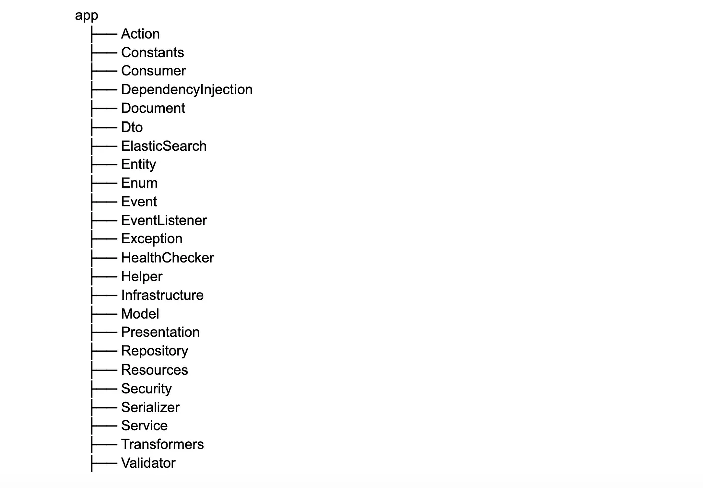
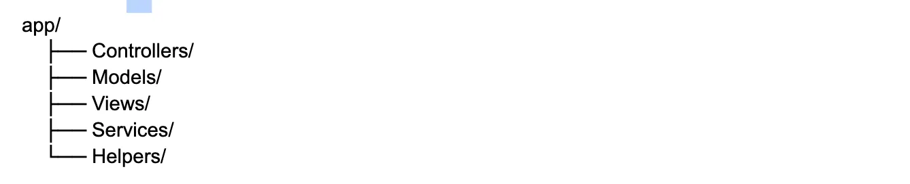
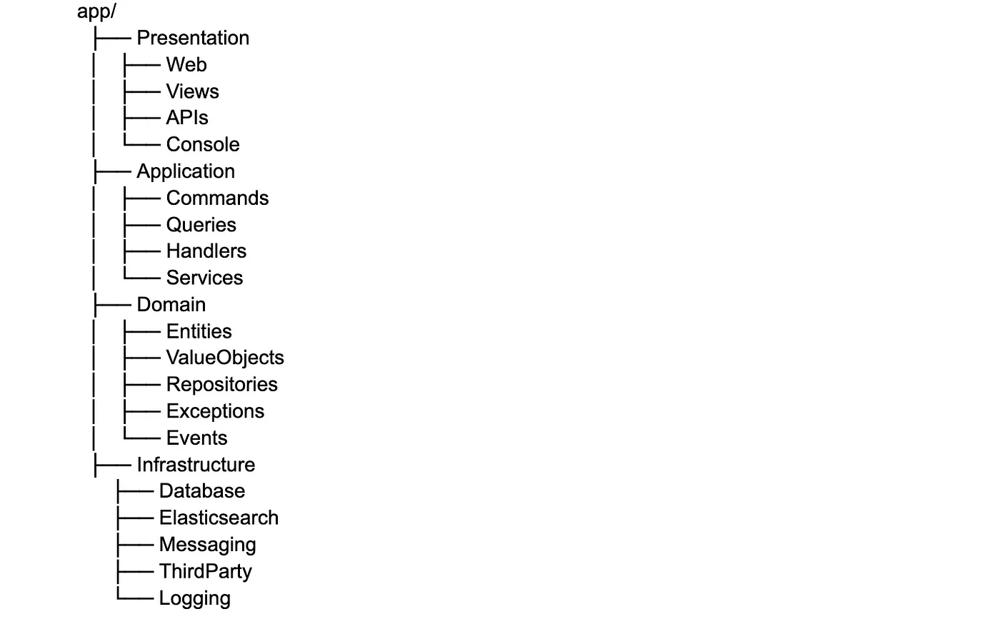
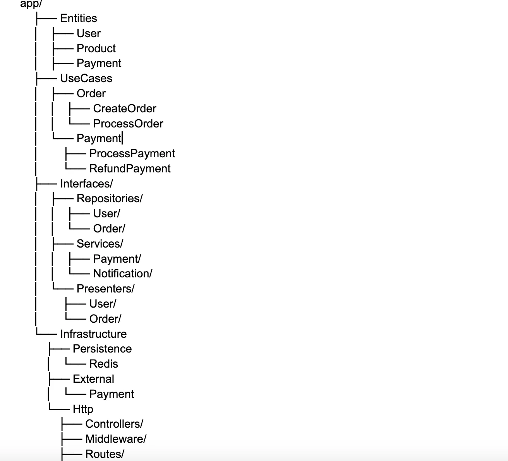
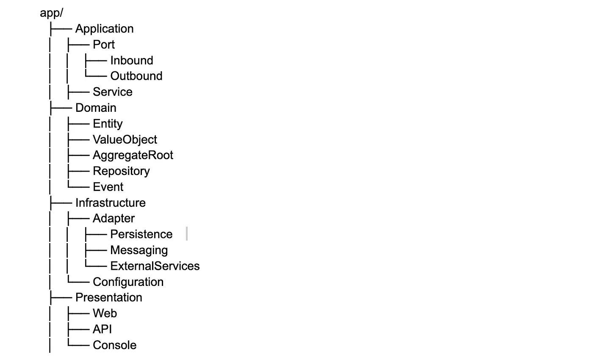
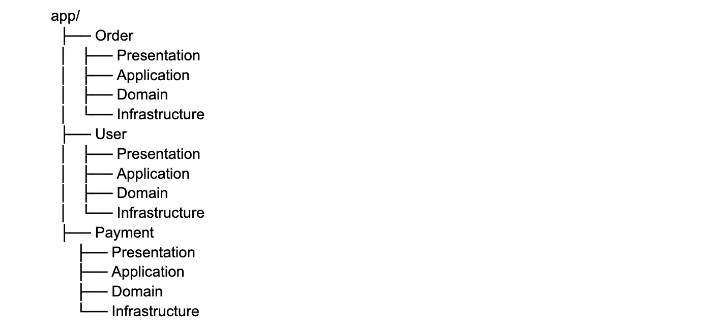
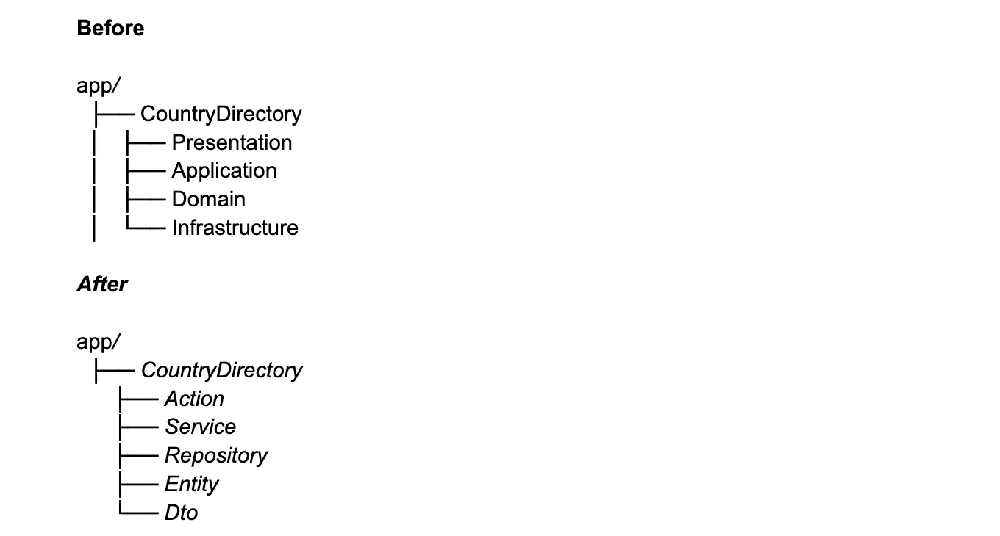
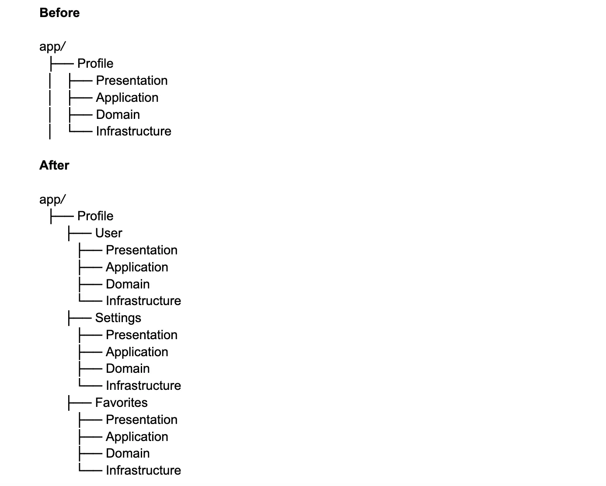
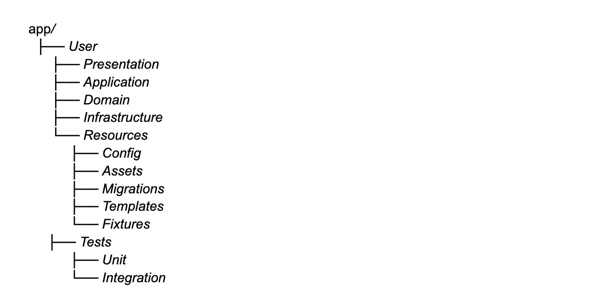

🔔 Introduction
Code structure is not just about organizing files and folders in a project; it is a fundamental aspect of development that impacts its efficiency, quality, and long-term maintainability. A well-organized codebase enhances understanding, simplifies the implementation of new features, and reduces the likelihood of errors. Regardless of the project’s scale — whether a small application or a complex system — a structured approach to code organization helps mitigate risks associated with technical debt. It boosts the productivity of the development team. However, not all developers fully grasp the significant difference between projects with a thoughtfully designed structure and those with chaotic organization.
This article will explore what “clear code structure” means and why it is crucial for successful development.
Criteria of clarity
- Each file and folder has a clear purpose.
- The organization of the project’s file system should be intuitive and easy to understand.
- Logic is divided into modules, layers, or functional areas.
- Separating logic simplifies understanding of the system and reduces the coupling between components.
- File, variable, and function names reflect their roles.
- Names should be self-documenting, meaning they should convey their purpose without requiring a deep dive into the implementation details.
- Coding standards adopted by the team are followed.
- Adhering to a consistent coding style makes the code easier to read and understand.
- Adding new features does not disrupt the existing structure.
- The project should be designed in a way that allows new functionality to be added with minimal changes to the existing code.
- The architecture anticipates future growth.
- The project should be built with scalability and future changes in mind.
🔖 Monolithic
What are the problems we have?
Too General Level of Abstraction
The structure is built around categories that reflect technical aspects of the code (e.g., Service, Repository, Validator). This approach neglects the application's domain, making the system harder to understand, especially for new developers who may not know which modules relate to which functionality.
Lack of Modularity
This results in changes to one part of the code often requiring modifications in files across multiple directories, increasing the likelihood of errors. When adding new functionality, in 95% of cases, you’ll need to distribute code across several directories. This increases cognitive load as the logic of a single module is scattered throughout the project. It also leads to more merge conflicts, as multiple developers may modify the same code.
Navigation Complexity
Directories become “junk drawers” where files from different functionalities accumulate, making them hard to locate and categorize.
Violation of DDD
Modern approaches to designing complex systems recommend structuring projects around domain entities and the application’s domain. The proposed structure lacks a clear separation between business logic and infrastructural concerns.
Scalability Issues
As the codebase grows, the proposed structure begins to “bloat.” Directories become overloaded with files, and file names start to duplicate. Additionally, file sizes grow, leading to other code smells.
Violations of SOLID Principles
- S (Single Responsibility Principle): Directories like Service, Helper, and Constants violate SRP because they group files for technical purposes rather than functionality. This results in files within a single directory addressing completely different aspects of the system.
- O (Open/Closed Principle): The structure makes it difficult to extend functionality without modifying existing code. For instance, adding new business logic often requires changes to existing services or validators, violating the open/closed principle.
- L (Liskov Substitution Principle): No violations were identified.
- I (Interface Segregation Principle): General-purpose directories like Helper or Validator encourage utility classes with overly broad interfaces, forcing users to interact with methods they don’t need.
- D (Dependency Inversion Principle): Dependencies in the current structure are often defined at the infrastructure level (e.g., Repository, ElasticSearch) rather than at the abstraction level. This violates DIP, as modules depend on implementation details rather than abstractions.
Violations of GRASP Principles
- Information Expert: Classes and modules are not organized around business logic. Responsibilities are scattered across the structure, requiring developers to search the entire project to understand where data is processed.
- Low Coupling & High Cohesion: The code of a single module is split across multiple directories, reducing cohesion. Instead of grouping related classes, they are scattered throughout the project. This structure also encourages excessive coupling between modules.
Violations of the KISS Principle
The structure complicates understanding of the system, as new developers must memorize where to find specific logic. Simplicity is undermined by the scattered codebase.
🔖 MVC
What are the problems we have?
Occurs in small projects. Has similar problems with unstructured ways of organizing.
🔖 Multilayer
Advantages of the Structure
This structure provides a clear separation of responsibilities. Changes in one layer will not affect others (e.g., replacing the database). New layers or modules can be added without significant modifications to the rest. Each layer has a strictly defined role:
- Presentation: Handles user requests.
- Application: Coordinates actions and invokes business logic.
- Domain: The core containing business logic.
- Infrastructure: Handles technical details.
This organization is significantly better but still not perfect, as it also has its drawbacks.
What are the problems we have?
Layers Communicate Through Interfaces
This increases the number of DTOs required for data transfer between layers. Logic related to a single domain can still be scattered across layers.
Violations of SOLID Principles
- S (Single Responsibility Principle): Code related to a single functionality is scattered across layers, making the system harder to understand. For example, a Order module is forced to include separate components in each layer instead of being localized.
- O (Open/Closed Principle): No violations were detected.
- L (Liskov Substitution Principle): No violations were detected.
- I (Interface Segregation Principle): No violations were detected.
- D (Dependency Inversion Principle): Poor code organization can violate this principle when interfaces are defined alongside implementations in the Infrastructure layer rather than in the Domain layer.
Violations of GRASP Principles
- Low Coupling & High Cohesion: Code related to a single functionality is still scattered across multiple directories (layers). Poor organization can also violate this principle when, for instance, the Application layer depends directly on the Domain, and the Domain depends on the Infrastructure. To prevent this, interfaces should be used for communication between layers to avoid direct dependencies.
Code Duplication
Code duplication is not necessarily an issue, and here’s why:
- Duplication can sometimes be a justified decision, especially when:
- The code looks similar but serves different business domains.
- Changes in one place should not affect another.
- Contexts of use differ significantly.
Logic Duplication
Logic duplication is truly dangerous! It’s important not to confuse these two concepts — accidental code similarity and actual duplication of business logic.
🔖 Clean Architecture
Use Cases are application components that handle business logic, interact with entities, and perform specific operations within the application.
Advantages of the Structure
- Clear Domain Organization: Each application layer separates business logic from technical details, keeping the code organized and understandable. This makes the project’s structure easier to grasp and maintain.
- Convenient Project Navigation: Logical and consistent categorization of files (e.g., Entities, UseCases, Presenters) ensures intuitive project navigation. Developers can quickly locate necessary components without wasting time searching.
- Scalability When Adding New Features: Each layer in this architecture is isolated, simplifying the process of adding new features or modifying existing ones. Adding a new use case or business rule won’t complicate the work of other layers.
- Component Isolation: Separating logic into layers reduces interdependencies between components. Changes in one layer (e.g., the database or external interface) don’t impact other layers, enhancing the system’s modularity and testability.
What are the problems we have?
The structure shares similar challenges with unstructured organization.
🔖 Hexagonal
Inbound Ports define the interfaces through which external components or systems interact with your application (e.g., APIs, web controllers, commands).
Outbound Ports define the interfaces for the application to interact with external services, such as databases, external APIs, message queues, etc.
Adapters implement the integration with external systems.
What are the problems we have?
Complexity in Understanding and Maintenance
Dividing the application into multiple layers and components can make the system harder to understand and maintain. Adding ports and adapters increases the number of interfaces and abstractions, which might make the project more complex, particularly for new developers.
Violations of SOLID Principles
- S (Single Responsibility Principle): SRP might be violated if adapters begin performing additional functions beyond implementing a port, such as handling business logic.
- O (Open/Closed Principle): No violations were detected.
- L (Liskov Substitution Principle): No violations were detected.
- I (Interface Segregation Principle): No violations were detected.
- D (Dependency Inversion Principle): No violations were detected.
Violations of GRASP Principles
- No violations were detected.
Information Expert: This principle might be violated if responsibility for logic that better fits another part of the system is placed on the application or interface layer.
Controller: This principle might be violated if controllers manage too much logic
🔖 DDD (Domain Driven Design)
Advantages of the Structure
- Focus on Business Domains: Code related to a specific business domain is localized, making it easier to understand and work on a module.
- Encapsulation: Each module’s logic is isolated, helping minimize the impact of changes in one module on others. Code is clearly divided into layers, and layers within a module remain isolated from other modules.
- Scalability: Adding new functionality or modules (e.g., a Partner module) does not require changes to existing modules.
- Ease of Testing: Each module can be tested in isolation, simplifying the creation of unit and integration tests.
- DDD Alignment: The proposed structure aligns well with Domain-Driven Design (DDD), providing a clear separation of modules into domains and distinct layers.
What are the problems we have?
Shared Code
Shared code may emerge. Adding a Shared module for common components (e.g., validators, exceptions, utilities) can lead to an anti-pattern if not handled properly. To avoid this, only strictly common and highly isolated components should be added to Shared, ensuring it doesn’t become a “dumping ground”.
Violations of SOLID Principles
- No violations were detected.
DIP (Dependency Inversion Principle): This can be violated if dependency injection (DI) is not used to inject implementations.
ISP (Interface Segregation Principle): This can be violated if interfaces become bloated.
Violations of GRASP Principles
- No violations were detected.
High Cohesion: This principle can be violated if layers contain unrelated code. The code that is used together should be placed together.
Low Coupling: This principle can be violated if events or a message bus are not used for asynchronous interactions.
✨ Advices
- Tip #1: Sometimes layers can be excessive. For example, if we have a small domain and can confidently say that it will not expand. 
- Tip #2: Sometimes layers can include multiple subdomains. In this case, the structure will be expanded. 
- Tip #3: Moving configuration, migrations, and fixtures within the module boundaries makes the module fully self-contained: everything needed for development, testing, and deployment is located in one place. 
It isolates configurations, migrations, and fixtures into a separate folder, simplifying navigation and distinguishing resources related to setup or infrastructure aspects from business logic. All tests related to the module are stored in its Tests folder, improving isolation. This approach makes it easier to test and extract the module into a microservice if needed.
Symfony example:
class Kernel extends \Symfony\Component\HttpKernel\Kernel
{
use MicroKernelTrait;
protected function configureRoutes(RoutingConfigurator $routes): void
{
$configDir = $this->getConfigDir();
$routes->import($configDir.'/routes.yaml');
$this->loadDomainConfigurations($routes);
}
protected function loadDomainConfigurations(RoutingConfigurator $routes): void
{
$projectDir = $this->getProjectDir();
$finder = new Finder();
$finder->directories()
->in($projectDir.'/src')
->depth(0)
->notName('Kernel.php');
foreach ($finder as $domainDir) {
$domainPath = $domainDir->getRealPath();
$domainName = strtolower($domainDir->getBasename());
// Load API routes
$apiPath = $domainPath.'/Presentation/Api';
if (is_dir($apiPath)) {
$routes->import($apiPath, 'attribute')
->prefix('/'.$domainName);
} else {
// Search in subdirectories for API routes
$subFinder = new Finder();
$subFinder->directories()
->in($domainPath)
->depth(0);
foreach ($subFinder as $subFolder) {
$apiPath = $domainPath.'/'.$subFolder->getBasename().'/Presentation/Api';
if (is_dir($apiPath)) {
$routes->import($apiPath, 'attribute')
->prefix('/'.$domainName);
}
}
}
// Load Web routes
$webPath = $domainPath.'/Presentation/Web';
if (is_dir($webPath)) {
$routes->import($webPath, 'attribute')
->prefix('/'.$domainName);
} else {
// Search in subdirectories for Web routes
$subFinder = new Finder();
$subFinder->directories()
->in($domainPath)
->depth(0);
foreach ($subFinder as $subFolder) {
$webPath = $domainPath.'/'.$subFolder->getBasename().'/Presentation/Web';
if (is_dir($webPath)) {
$routes->import($webPath, 'attribute')
->prefix('/'.$domainName);
}
}
}
// Load YAML routes if they exist
$routesPath = $domainPath.'/Resources/Config/routes.yaml';
if (file_exists($routesPath)) {
$routes->import($routesPath);
} else {
// Search in subdirectories for routes.yaml
$subFinder = new Finder();
$subFinder->directories()
->in($domainPath)
->depth(0);
foreach ($subFinder as $subFolder) {
$routesPath = $domainPath.'/'.$subFolder->getBasename().'/Resources/Config/routes.yaml';
if (file_exists($routesPath)) {
$routes->import($routesPath);
}
}
}
}
}
protected function buildContainer(): ContainerBuilder
{
$container = parent::buildContainer();
// Load domain services
$projectDir = $this->getProjectDir();
$finder = new Finder();
$finder->directories()
->in($projectDir.'/src')
->depth(0)
->notName('Kernel.php');
// Load services
$loader = new YamlFileLoader($container, new FileLocator());
foreach ($finder as $domainDir) {
$domainPath = $domainDir->getRealPath();
$servicesPath = $domainPath.'/Resources/Config/services.yaml';
if (file_exists($servicesPath)) {
$loader->load($servicesPath);
} else {
// Search in all subdirectories
$subFinder = new Finder();
$subFinder->directories()
->in($domainPath)
->depth(0);
foreach ($subFinder as $subFolder) {
$servicesPath = $domainPath.'/'.$subFolder->getBasename().'/Resources/Config/services.yaml';
if (file_exists($servicesPath)) {
$loader->load($servicesPath);
}
}
}
}
return $container;
}
}
Laravel example:
final class DomainServiceProvider extends ServiceProvider
{
public function register(): void
{
$this->registerRoutes();
$this->registerCommands();
}
private function registerRoutes(): void
{
$presentationPath = dirname(__DIR__).'/Presentation';
if (!is_dir($presentationPath)) {
return;
}
$this->registerRoutesFromPath($presentationPath);
}
private function registerCommands(): void
{
$consolePath = dirname(__DIR__).'/Presentation/Console';
if (!is_dir($consolePath)) {
return;
}
$commands = $this->findCommands($consolePath);
if (!empty($commands)) {
$this->commands($commands);
}
}
private function registerRoutesFromPath(string $path): void
{
$directory = new \RecursiveDirectoryIterator($path);
$iterator = new \RecursiveIteratorIterator($directory);
$files = new \RegexIterator($iterator, '/^.+\.php$/i', \RegexIterator::GET_MATCH);
foreach ($files as $file) {
$filePath = $file[0];
$className = $this->getClassNameFromFile($filePath);
if (!$className || !class_exists($className)) {
continue;
}
$this->registerClassRoutes($className);
}
}
private function registerClassRoutes(string $className): void
{
$reflection = new \ReflectionClass($className);
$attributes = $reflection->getAttributes(Route::class, \ReflectionAttribute::IS_INSTANCEOF);
foreach ($attributes as $attribute) {
$route = $attribute->newInstance();
LaravelRoute::middleware($route->middleware)
->match($route->methods, $route->path, $className)
->name($route->name);
}
}
private function findCommands(string $path): array
{
$commands = [];
$directory = new \RecursiveDirectoryIterator($path);
$iterator = new \RecursiveIteratorIterator($directory);
$files = new \RegexIterator($iterator, '/^.+Command\.php$/i', \RegexIterator::GET_MATCH);
foreach ($files as $file) {
$filePath = $file[0];
$className = $this->getClassNameFromFile($filePath);
if ($className && class_exists($className)) {
$reflection = new \ReflectionClass($className);
$attributes = $reflection->getAttributes(AsCommand::class);
if (!empty($attributes)) {
$commands[] = $className;
}
}
}
return $commands;
}
private function getClassNameFromFile(string $filePath): ?string
{
$content = file_get_contents($filePath);
if (preg_match('/namespace\s+(.+?);/s', $content, $matches)
&& preg_match('/class\s+(\w+)/', $content, $classMatches)) {
return $matches[1].'\\'.$classMatches[1];
}
return null;
}